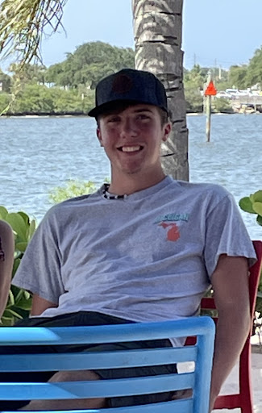

Our Mission
Here at Spartan Web Services, our mission is to allow those who are passionate about music to express their thoughts and feelings about the music they listen to. By utilizing the MusicBrainz API, our app allows users to create an account to rate and review albums.
Our Team
-
Caelan Moglovkin is a Junior who focuses his studies on Computer Science and IT at Michigan State University. Passionate about both music and technology, Caelan helped found SWS. At SWS, he focuses on all things security. As the lead security specialist, Caelan focuses on both the security of SWS users and the organization as a whole. He is responsible for the overseeing of security protocols, the identification and mitigation of vulnerabilities, and ensuring that security measures are properly implemented throughout the organization.
Caelan Moglovkin
Security Team Lead
-
Garrett Nutting is a freshman at Michigan State University studying Information Science. At SWS, Garrett is responsible for the creation of the content within this website. Not limited to the website, he also helped in the creation of the presentation for the team.
Garrett Nutting
Web Developer Team Member
-

Jase Savela is a Sophomore at Michigan State University and is currently studying Information Science as well as pursuing a minor in Sales Leadership. At SWS, Jase’s focus is on cloud infrastructure. His role in the organization is to set up the cloud services that SWS utilizes as well as ensuring functionality of the site through Microsoft Azure Cloud Computing Services.
Jase Savela
Cloud Administrator
-
Sam Kurtzman is a Junior at Michigan State University who is studying both Information and Computer Science. At SWS, he’s in charge of programming the album review functionality of our website. As and avid music enjoyer, Sam came up with the idea for SWS.
Sam Kurtzman
Lead Back-End Developer
-

Matthew Nehrt is a Senoir at Michigan State University studying Information Science. At SWS, he is the lead web developer in charge of the website build and maintenance. If his free time he enjoys spending time with his wife, golfing with dad, and playing rocket league with his friends.
Matthew Nehrt
Lead Front-End Developer
-

Mithilya Srinivasan, a junior at Michigan State University majoring in Information Science, is responsible for ensuring that the SWS security policy accurately describes the steps taken to secure the API hosted off of Microsoft Azure. Aside from security, Mithilya helped in the creation of the presentation for the team.
Mithilya Srinivasan
Security Team Member